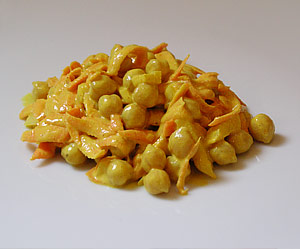

Kichererbsensalat
5 von 6320 g kichererbsen am vortag einweichen. ca. 45 minuten mit einer gespickten zwiebel (lorbeerblätter und nelken) und etwas salz al dente garen. 2 tl kreuzkümmel, je 1 tl koreanderpulver und milder curry und 2 tl kurkuma (gelbwurz) in erdnussöl kurz dünsten (nicht anbrennen lassen!). die gewürzmischung zu den abgetropften erbsen geben und auskühlen lassen. 2 karotten raffeln, eine gehackte zwiebel und 200 g naturejoghurt, saft von einer halben zitrone, je ein el senf und mayonnaise und etwas wasser zusammen vermengen und zu den erbsen geben. mind. 1 stunde einziehen lassen.
